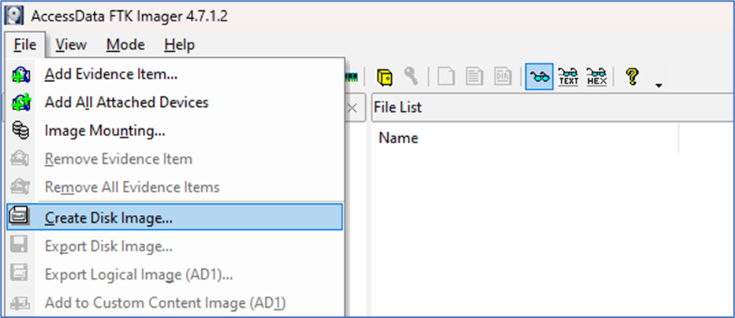
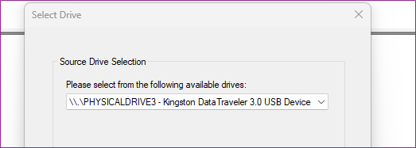
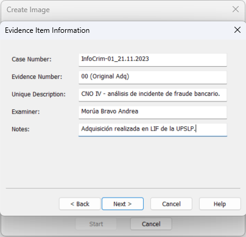
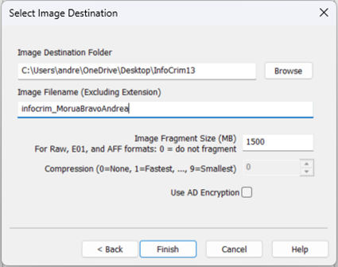
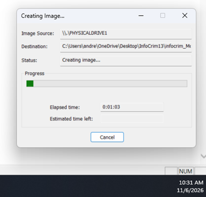
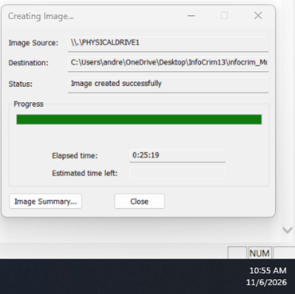
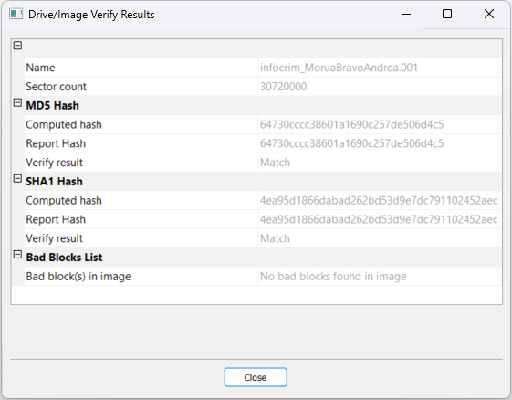
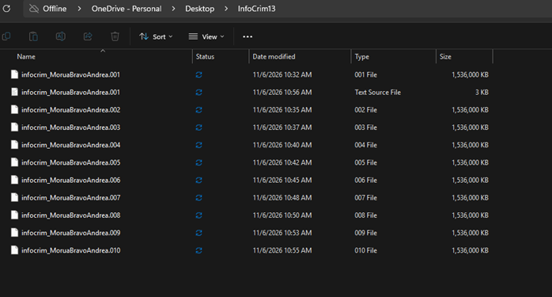
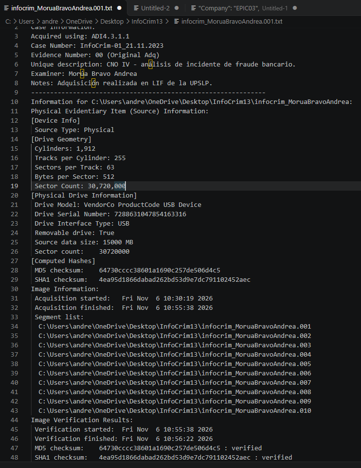

La verdad en los bits: adquisición forense con FTK Imager
Introducción
El proceso de adquisición forense realizado con FTK Imager constituye la primera etapa metodológica de la Informática Forense (Adquisición y Preservación). Su objetivo principal es duplicar la evidencia digital almacenada en un soporte físico sin alterar en lo absoluto su contenido original.
Objetivo
Realizar la adquisición de evidencia digital mediante la extracción de una imagen forense bit a bit utilizando la herramienta AccessData FTK Imager, asegurando la preservación de la cadena de custodia y la verificación de la integridad criptográfica mediante funciones hash (MD5 y SHA-1).
Información general del caso
- Número de Caso: InfoCrim-01_21.11.2023
- Número de Evidencia: 00 (Original Adq)
- Descripción del Caso: CNO IV - análisis de incidente de fraude bancario
- Examinador Asignado: Morúa Bravo Andrea
- Notas Adicionales: Adquisición realizada en LIF de la UPSLP
Desarrollo forense de adquisición
A continuación se detalla la secuencia técnica ejecutada durante el proceso de adquisición de evidencia digital:
Paso 1: Inicialización del entorno de captura
Se ejecuta AccessData FTK Imager v4.7.1.2. En el menú contextual File, se selecciona la opción Create Disk Image.... En un entorno forense real se debe implementar un Hardware Write Blocker (bloqueador de escritura físico) para garantizar que la unidad fuente no sufra modificaciones por automontaje del sistema operativo.

Paso 2: Selección de la fuente de evidencia
En la pantalla Select Source, se indica Physical Drive para realizar una extracción bit a bit de bajo nivel. Posteriormente, en Source Drive Selection, se señala el dispositivo físico correspondiente: \\.\PHYSICALDRIVE3 - Kingston DataTraveler 3.0 USB Device.

Paso 3: Configuración de metadatos de la evidencia
Se establece la adquisición en formato de lectura universal Raw (dd) y se registran los metadatos requeridos por el estándar forense (Case Number, Evidence Number, Unique Description, Examiner y Notes).

Paso 4: Definición de directorio y nombre de salida
Se establece como ruta de salida C:\Users\andre\OneDrive\Desktop\InfoCrim13 y se asigna el nombre infocrim_MoruaBravoAndrea. Se especifica un tamaño de fragmentación de 1500 MB y compresión 0 (None).

Paso 5: Marcas de tiempo del proceso de adquisición
- Hora de Inicio de Adquisición: 10:30 AM (06/11/2026)
- Hora de Finalización de Adquisición: 10:55 AM (06/11/2026)
- Tiempo Total Transcurrido: 25 minutos y 19 segundos (0:25:19)


Cuestionario teórico de conceptos forenses
-
¿Qué tipo de formato se refiere el Raw (dd)?
El formato Raw (dd) es una copia binaria pura y exacta sector por sector de la unidad física fuente. No añade encabezados, metadatos propios de la herramienta ni compresión al contenedor de evidencia. Su principal ventaja es la compatibilidad universal en la industria (soportado nativamente por Autopsy, EnCase, X-Ways, Sleuth Kit y herramientas de CLI en Linux). -
¿A qué tipo de formato se refiere el E01?
E01 (Expert Witness Format) es el formato estándar creado por EnCase. A diferencia del formato crudo, E01 integra en su estructura una cabecera con metadatos del caso (examinador, número de evidencia, notas), compresión opcional de datos y sumas de verificación (checksums CRC) intercaladas periódicamente entre los bloques de datos para garantizar la integridad estructural continua. -
¿Cuál es la diferencia entre un formato SMART y un formato E01?
SMART (desarrollado por ASRData) es un formato de imagen forense clásico pensado para segmentación y verificación de integridad mediante hashes guardados internamente en el contenedor. Por su parte, E01 es el estándar de facto aceptado internacionalmente en entornos judiciales, ofreciendo un soporte más amplio en herramientas modernas, una estructura de metadatos más robusta y una validación de bloques más flexible frente a daños o corrupción de sectores.
Análisis e integridad de resultados forenses
Tras finalizar la adquisición, el módulo de verificación arroja una coincidencia exacta de integridad (Match):

Se generaron un total de 11 archivos en la carpeta de destino InfoCrim13 (10 fragmentos de imagen .001 a .010 de 1,536,000 KB cada uno y 1 archivo de registro .001.txt de 3 KB):

El archivo infocrim_MoruaBravoAndrea.001.txt contiene la bitácora criptográfica del proceso realizada por FTK Imager:

Conclusión
El desarrollo de esta práctica demostró la enorme relevancia que tienen los metadatos en la informática forense y la ciberseguridad. Herramientas como ExifTool facilitan la extracción minuciosa de información que a simple vista permanece oculta, permitiendo comprobar la trazabilidad de documentos institucionales y la ubicación geográfica exacta de archivos multimedia a través de sus coordenadas GPS. Asimismo, se comprobó la necesidad fundamental de aplicar técnicas de sanitización o borrado de metadatos en archivos que se comparten públicamente, mitigando así riesgos de exposición de privacidad y filtración de información sensible.
Documentación de la práctica (PDF)
Puedes consultar el reporte completo de la práctica directamente a continuación o descargarlo en tu dispositivo: